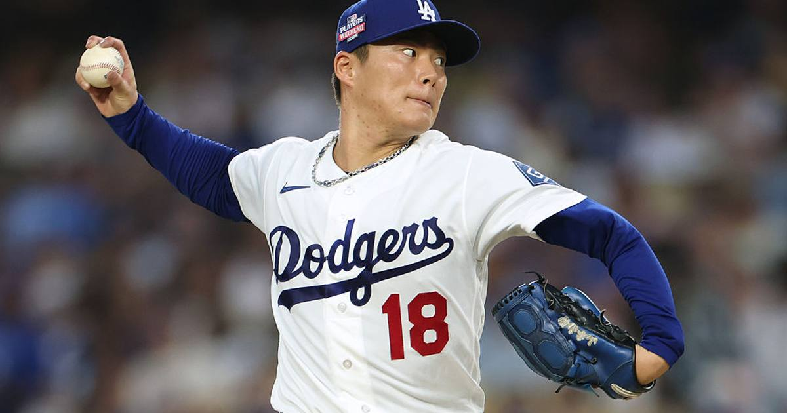

Yamamoto sets MLB mark with fifth straight postseason gem
Yoshinobu Yamamoto struck out a postseason career-high 10 over seven innings — and made MLB history doing it.

Disclosure: this post contains affiliate links. I earn a commission on qualifying purchases.
A postseason career night
Yoshinobu Yamamoto fanned a postseason career-high 10 over seven innings in Tuesday's 3-1 Game 3 win at Atlanta.
The record
He is the first pitcher ever to win five straight postseason appearances while allowing no more than one run and one walk in any of them — and all five came on the road. That's a verified October rarity, the kind of stat that holds up in any era.
Why it matters now
The Dodgers closed out the Braves the next night to win the NLDS in four. Yamamoto's Game 3 gem was the start that put Atlanta on the brink — and it sets the tone for a rotation piece the Dodgers will lean on in the NLCS starting Sunday.
Watch
Source: Yoshinobu Yamamoto matches a CAREER-HIGH with 10 Ks in the NLDS for the Dodgers! via MLB — every one of his 10 strikeouts from the Oct 6 Game 3 start against the Braves.
Gear up: [Fanatics](https://fanatics.93n6tx.net/WOLjqe) via Fanatics